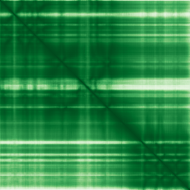
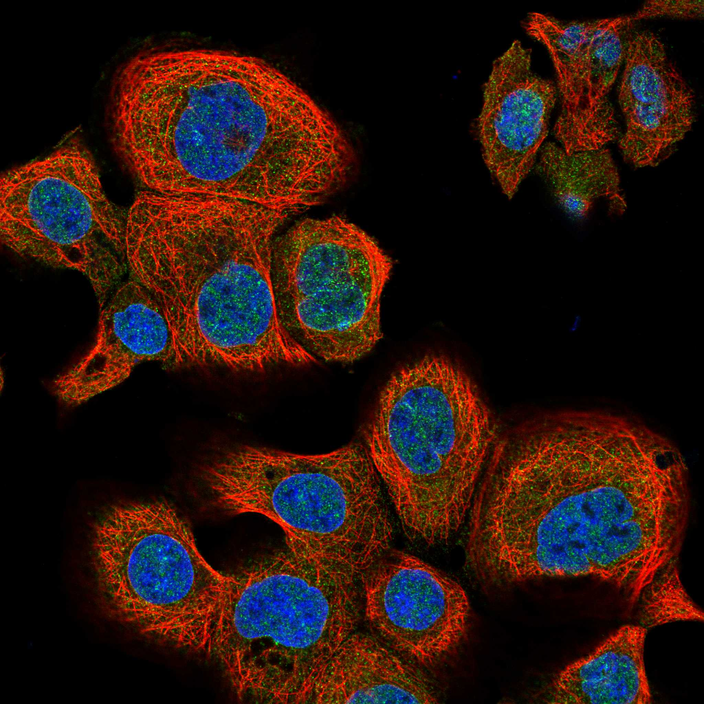

type: protein-evaluation gene: "AARSD1" date: 2026-06-01 tags: [protein-scout, nuclear-envelope, evaluation] status: scored ---
AARSD1 — 核膜蛋白评估报告
1. 基本信息
| 项目 | 内容 |
|---|---|
| 基因名 | AARSD1 |
| 蛋白全名 | Alanyl-tRNA editing protein Aarsd1 |
| 蛋白大小 | 412 aa / 45.5 kDa |
| UniProt ID | Q9BTE6 |
2. 评分总览
| 维度 | 得分 | 新权重 | 加权后 | 关键证据摘要 |
|---|---|---|---|---|
| 核定位特异性 | 7/10 | ×4 | 28.0 | HPA Approved: Nuclear membrane + Cytosol; GO-CC: nucleus HDA:UniProtKB |
| 蛋白大小 | 6/10 | ×1 | 6.0 | 412 aa, 45.5 kDa |
| 研究新颖性 | 10/10 | ×5 | 50.0 | PubMed strict=8, broad=13 |
| 三维结构 | 9/10 | ×3 | 27.0 | AlphaFold pLDDT 93.6, 82.8% >90, 0% <50; PDB 无 |
| 调控结构域 | 5/10 | ×2 | 10.0 | 5 InterPro entries (IPR018165, IPR051335, IPR018163, IPR009000, IPR012947); 1 Pfam (PF07973) |
| PPI 网络 | 5/10 | ×3 | 15.0 | STRING: AARS1 (0.878), PTGES3L (0.800), TRIM45 (exp 0.618), ARID4B (exp 0.529); IntAct 15 entries |
| 加权总分 | 136/180******** | |||
| 互证加分 | +1.5 | HPA Approved nuclear membrane + GO nucleus HDA 多源互证 | ||
| 归一化总分 (÷1.83) | 74.3/100******** |
3. 详细分析
3.1 核定位证据
| 来源 | 定位 | 可信度 |
|---|---|---|
| Protein Atlas (IF) | Nuclear membrane, Cytosol | Approved (高置信度 IF) |
| UniProt | Cytoplasm (ECO:0000250 sequence similarity) | 序列推断级 |
| GO-CC | cytoplasm IEA:UniProtKB-SubCell; nucleus HDA:UniProtKB | IEA + HDA |
HPA IF 分析: HPA Approved 级别免疫荧光显示 AARSD1 定位于 Nuclear membrane + Cytosol（均为主定位）。核膜染色模式清晰可靠。


核定位综合判断: HPA Approved 级别 IF 为核膜定位提供最高级别实验证据。GO-CC 有 nucleus HDA:UniProtKB（高通量直接 assay），与 HPA 结果一致。UniProt Subcellular Location 仅注释 Cytoplasm (sequence similarity)，但该注释基于序列相似性推断，权威性低于 HPA Approved 实验证据。蛋白同时具有胞质定位（tRNA 编辑功能），为双定位蛋白。
3.2 结构与结构域
| 指标 | 数值 |
|---|---|
| AlphaFold | AF-Q9BTE6-F1 |
| 平均 pLDDT | 93.6 |
| pLDDT >90 | 82.8% |
| pLDDT 70-90 | 15.8% |
| pLDDT 50-70 | 1.5% |
| pLDDT <50 | 0.0% |
| PDB | 无 |
| InterPro | IPR018165 (ThrRS/AlaRS common domain), IPR051335, IPR018163 (Thr/AlaRS class II), IPR009000 (Translation elongation factor/aminacyl-tRNA synthetase), IPR012947 (Thr/AlaRS editing domain) |
| Pfam | PF07973 (Threonyl/Alanyl tRNA synthetase SAD) |

结构评价: AlphaFold 预测质量极高（mean pLDDT 93.6, 82.8% >90, 0% <50），全序列折叠可靠。无 PDB 实验结构，但 AF 模型可充分满足结构评估需求。InterPro 注释明确为 tRNA 合成酶相关结构域，含催化功能域（Thr/AlaRS class II）和编辑结构域。
3.3 研究现状
| 指标 | 数值 |
|---|---|
| PubMed strict (Title/Abstract) | 8 |
| PubMed broad | 13 |
| 别名 | 无 |
关键文献涉及：AARSD1 在胶质瘤 fitness network (PMID:35044082)、甲状腺功能交叉遗传分析 (PMID:36672757)、心肌肌红蛋白成熟（PMID:31170354）及三阴性乳腺癌基因变异 (PMID:29684420)。文献主要集中在基因组/转录组关联分析层面，无针对 AARSD1 核功能的定向研究。研究新颖性极高（strict=8），开发空间大。
3.4 PPI 网络
| Partner | Source | Evidence/Method | Score/Experiments | PMID/Note | Relevance |
|---|---|---|---|---|---|
| AARS1 | STRING | textmining | 0.878 | 功能相关（tRNA synthetase） | tRNA 合成酶家族 |
| PTGES3L | STRING | database (PTGES family) | 0.800 | - | 前列腺素 E 合成 |
| KARS1 | STRING | textmining | 0.710 | 功能相关（Lys-tRNA synthetase） | tRNA 合成酶家族 |
| ADAT1 | STRING | textmining | 0.652 | 功能相关（tRNA deaminase） | tRNA 编辑 |
| TRIM45 | STRING + IntAct | exp 0.618; validated two-hybrid (IntAct) | 0.624 | PMID:32296183 | E3 ubiquitin ligase |
| RPA1 | STRING | exp 0.175 + textmining 0.497 | 0.569 | - | DNA 损伤修复 |
| JADE2 | STRING | exp 0.410 + textmining 0.286 | 0.561 | - | HBO1 乙酰转移酶复合体 |
| ARID4B | STRING + UniProt | exp 0.529; UniProt exp 3 | 0.531 | - | 染色质重塑/转录调控 |
| FAAP100 | UniProt + IntAct | exp 3; two-hybrid array (IntAct) | - | PMID:32296183 | Fanconi anemia DNA repair |
| DYNLT1 | UniProt | exp 3 | - | - | 动力蛋白轻链 |
| ZNF185 | UniProt + IntAct | exp 3; validated two-hybrid | - | PMID:32296183 | 锌指蛋白 |
| SPANXN3 | UniProt + IntAct | exp 3; validated two-hybrid | - | PMID:32296183 | 精子发生相关 |
| TAT | IntAct | anti tag co-IP | - | PMID:28514442 | 酪氨酸氨基转移酶 |
| ERBB2 | IntAct | ubiquitin reconstruction | - | PMID:31980649 | 受体酪氨酸激酶 |
| EIPR1 | IntAct | LUMIER | - | PMID:25036637 | Endosome 分选 |
| PARVG | IntAct | anti tag co-IP | - | PMID:28514442 | 细胞迁移 |
PPI 分析: STRING 网络以 textmining 驱动的 tRNA 合成酶功能关联为主（AARS1, KARS1, ADAT1）。实验互作 TRIM45 (exp 0.618) 和 ARID4B (exp 0.529) 较为突出——ARID4B 是 ARID 家族染色质重塑/转录调控因子，可能参与核内相互作用。IntAct 记录 15 个互作伙伴，多数为高通量 two-hybrid 或 LUMIER 筛选，部分经验证。PPI 整体规模中等，缺乏明确核膜相关互作伙伴（如 Lamin/NUP 网络未出现）。
4. 总体评价
AARSD1 经重新评估（HPA Approved IF 新数据）确认为核膜-胞质双定位蛋白。HPA Approved 级别 IF 图像明确显示 Nuclear membrane + Cytosol 染色模式，为核膜定位提供最高级别实验证据。GO-CC nucleus HDA 注释与 HPA 一致。蛋白主要功能为胞质 tRNA 编辑（校正氨酰化错误），核膜定位的生物学意义尚不明确。结构预测优秀（pLDDT 93.6, 0% 无序），研究新颖性极高（strict=8）。建议作为中等优先级 nuclear-envelope 候选，重点关注其在核膜上可能的功能角色。
5. 数据来源
- UniProt: https://www.uniprot.org/uniprotkb/Q9BTE6
- AlphaFold: https://alphafold.ebi.ac.uk/entry/Q9BTE6
- PubMed: https://pubmed.ncbi.nlm.nih.gov/?term=AARSD1
- Protein Atlas: https://www.proteinatlas.org/ENSG00000266967-AARSD1
- HPA Subcellular: https://www.proteinatlas.org/ENSG00000266967-AARSD1/subcellular

HPA IF 图像已本地嵌入。